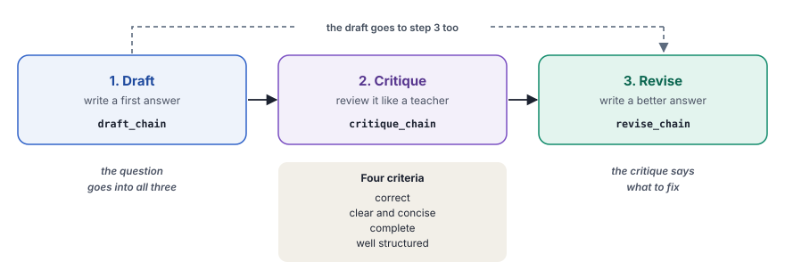
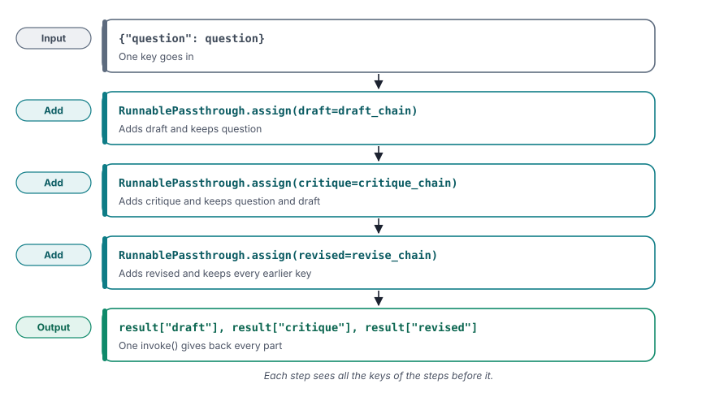

Self-reflection asks the model to review its own answer and then improve it using that review.
What you will learn
- The three steps of self-reflection, namely draft, critique and revise
- What each of the three prompts asks for, and why
- How to pass the draft and the critique from one chain to the next
- How to read a critique before you trust it
- When self-reflection makes an answer better, and when it does not
Read chapter 15 first. This chapter uses chains of the same kind and asks a related question, namely how a model can improve its own answer. For the short local version near the end, you also need Ollama from Start here.
The idea
In chapter 15, the model checked each fact of a long answer, one fact at a time. Many answers have problems that are not about a single fact. A point is missing, a sentence is unclear or the answer is longer than the question asked for. To find such problems, a reader needs to see the whole answer at once.
Self-reflection gives the model that whole view. The model first writes a draft. Then it reads the draft as a reviewer and lists specific problems, which is the critique. Last, it writes a new answer that fixes those problems. Naming the problems first gives the rewrite a clear list of what to fix.
The method follows the paper "Self-Refine" by Aman Madaan and colleagues, from 2023. Its idea is simple and elegant. One model plays all three roles, with no extra training and no second model. On seven tasks, from dialogue replies to faster code, the paper reports an average gain of about 20 percentage points. The paper repeats the critique and the revision several times, while this chapter runs one round.
A student in Delhi writes an essay for a practice board exam. Before she hands it in, she reads it again with a red pen, in the way her teacher reads it. She marks a missing point, a long sentence and a weak ending. Then she writes a clean copy that fixes each mark. The red pen finds what she can see, but it cannot find a date that she never learned.
The idea in one picture
The three steps run in a row. Each step gets the question, and the last step also gets the draft and the critique.

| Chain of verification (chapter 15) | Self-reflection (this chapter) | |
|---|---|---|
| Calls to the model | Three, plus one for each fact | Three |
| What the model reviews | One fact at a time | The whole answer |
| What it improves best | Wrong facts, if the checker knows them | Clarity, completeness and length |
| What the last step gets | The answer and the check results | The question, the draft and the critique |
What we build in this chapter
Both programs run the same three prompts on three questions each. Each question asks for an answer of two or three sentences. A fixed length makes the draft and the revision easy to compare. Only the model and the questions change between the two programs.
The DPDP Act with Gemini
- Aim
- Gemini answers three questions about India's DPDP Act. Then it reviews each answer and writes a better one.
- Problem
- The questions ask about a data fiduciary, verifiable parental consent and purpose limitation, each in three sentences.
- Input
- Three questions in plain text, kept in a Python list.
- Expected output
- For each question, a draft, a critique and a revised answer, for example
--- REVISED ANSWER --- - Model
- Gemini 3.1 Flash Lite
App security with Qwen
- Aim
- Qwen answers three questions about app security. Then it reviews each answer and writes a better one.
- Problem
- The questions ask about password salts, an access token on Android and certificate pinning, each in two or three sentences.
- Input
- Three questions in plain text, kept in a Python list.
- Expected output
- The same three parts as Example 1, for each question.
- Model
- Qwen 2.5 7B, through OpenRouter
DPDP stands for the Digital Personal Data Protection Act of India, from 2023. The sentence limit is part of each question, so that you can see at a glance whether the revision kept to it.
![Setup, llm = ChatGoogleGenerativeAI(model="gemini-3.1-flash-lite", ...), temperature=0, so that each step stays steady. Input, for i, question in enumerate(questions, 1), Three questions about the DPDP Act, each with a sentence limit. Draft, draft_chain.invoke({"question" question}), A short first answer. Critique, critique_chain.invoke({..., "draft" draft}), A review against four criteria, with improvements. Revise, revise_chain.invoke({..., "critique" critique}), The better answer. Output, print(...), The draft, the critique and the revised answer. A loop goes back from stage 6 to stage 2, next question.](../../assets/img/diagrams/ai-16-ex1-flow.svg)
Step 1Create the file
In your project folder, create the file src/15_self_reflection_google.py. The docstring at the top states the method in a few sentences. Its last sentence gives the reason behind it. A named problem gives the rewrite something concrete to fix.
"""
Title: Self-Reflection Prompting (Google Generative AI)
Self-reflection asks the model to write a draft answer, then read that
draft as a reviewer and list specific improvements, and finally rewrite
the answer using that critique. Naming what is wrong first gives the
rewrite something concrete to fix.
uv run python src/15_self_reflection_google.py
"""Step 2Import what you need
from dotenv import load_dotenv
from langchain_google_genai import ChatGoogleGenerativeAI
from langchain_core.prompts import ChatPromptTemplate
from langchain_core.output_parsers import StrOutputParserload_dotenvreads your API key from the.envfile, as in every chapter.ChatGoogleGenerativeAI,ChatPromptTemplateandStrOutputParserare the model, the prompt and the parser of chapter 2.- Nothing else is needed. The whole method is three chains and a loop.
Step 3Create the model and the parser
def main():
load_dotenv()
# Initialize the model
# Temperature 0 keeps the draft, critique and revision steady.
llm = ChatGoogleGenerativeAI(
model="gemini-3.1-flash-lite",
temperature=0,
) # Parser to extract the text from the model response
parser = StrOutputParser()temperature=0makes the model pick its most likely words. Each step then gives a steady result, so that you can compare the draft and the revision fairly.StrOutputParserturns each reply into plain text, so that the next prompt can take it in.
Step 4Write the prompt for the draft
# Step 1: Draft
draft_prompt = ChatPromptTemplate.from_template(
"Provide a concise answer to the following question:\n\n{question}"
)- "Provide a concise answer" keeps the draft short. The question itself sets the exact number of sentences.
- The draft prompt knows nothing about the later steps. It is an ordinary prompt, as in the first chapters.
Step 5Write the prompt for the critique
# Step 2: Critique
critique_prompt = ChatPromptTemplate.from_template("""
Critique the following answer based on these criteria:
1. Is it factually correct?
2. Is it clear and concise?
3. Is it complete (covers all important aspects)?
4. Is it well-structured?
Provide specific, actionable improvements.
QUESTION: {question}
ANSWER TO CRITIQUE:
{draft}
CRITIQUE:
""")- The four numbered criteria tell the model what to look for. Without them, a critique often stays vague, such as "a good answer".
- "Provide specific, actionable improvements" asks for changes that the next step can carry out, not for general praise or blame.
- QUESTION and ANSWER TO CRITIQUE give the critic both texts. The question lets it judge whether the answer is complete and keeps to the sentence limit.
- The empty line after CRITIQUE marks the place where the model starts to write.
Step 6Write the prompt for the revision
# Step 3: Revise
revise_prompt = ChatPromptTemplate.from_template("""
Revise the original answer based on the provided critique.
Make it better while keeping it concise.
ORIGINAL QUESTION: {question}
ORIGINAL ANSWER: {draft}
CRITIQUE: {critique}
REVISED ANSWER:
""")- The prompt gets three inputs. The question keeps the answer on topic, the draft shows what to keep and the critique says what to change.
- "Make it better while keeping it concise" stops the answer from growing with every suggestion of the critique.
Step 7Create the three chains
# Create the three chains
draft_chain = draft_prompt | llm | parser
critique_chain = critique_prompt | llm | parser
revise_chain = revise_prompt | llm | parser- Each chain is the three-part chain of chapter 2, with its own prompt.
- All three chains share one model and one parser. The same model writes, reviews and rewrites.
Step 8Write the questions
# Sample questions on DPDP and privacy, each with a length limit
questions = [
"Explain what a data fiduciary is under India's DPDP Act, 2023, in 3 sentences.",
"Explain verifiable parental consent under India's DPDP Act, 2023, in 3 sentences.",
"Explain purpose limitation for an app that collects personal data, in 3 sentences.",
]- Each question ends with a sentence limit. The limit gives the critique one clear rule to check.
- The questions are about a law, so you can check every answer against the official text of the Act.
Step 9Run the three steps for each question
# Run the three steps for each question, one at a time
for i, question in enumerate(questions, 1):
print(f"\n{'=' * 60}")
print(f"QUESTION {i}: {question}")
print("=" * 60)
# Step 1: write the draft and show it
draft = draft_chain.invoke({"question": question})
print(f"\n--- DRAFT ---\n{draft}")
# Step 2: critique the draft and show it
critique = critique_chain.invoke({"question": question, "draft": draft})
print(f"\n--- CRITIQUE ---\n{critique}")
# Step 3: revise the draft using the critique
revised = revise_chain.invoke(
{"question": question, "draft": draft, "critique": critique}
)
print(f"\n--- REVISED ANSWER ---\n{revised}")draft_chain.invoke({"question": question})writes the draft.critique_chain.invoke({"question": question, "draft": draft})passes the draft into the critique prompt. The keys of the dictionary match the names in braces,{question}and{draft}.revise_chain.invoke(...)passes all three texts to the revision prompt.- The program prints each part as it arrives, so that you can compare the draft with the revised answer.
if __name__ == "__main__":
main()uv run python src/15_self_reflection_google.pyShow the full output111 lines
============================================================
SELF-REFLECTION: DRAFT -> CRITIQUE -> REVISE
============================================================
============================================================
QUESTION 1: Explain what a data fiduciary is under India's DPDP Act, 2023, in 3 sentences.
============================================================
--- DRAFT ---
Under India’s DPDP Act, 2023, a Data Fiduciary is any person or entity that determines the purpose and means of processing an individual's personal data. They are legally responsible for ensuring compliance with the Act, including obtaining valid consent and implementing robust security safeguards. Additionally, they must manage the data processing activities of any third-party "Data Processors" they engage to handle information on their behalf.
--- CRITIQUE ---
### Critique
**1. Is it factually correct?**
**Yes.** The definition accurately reflects the role of a Data Fiduciary as defined in Section 2(i) of the Digital Personal Data Protection (DPDP) Act, 2023.
**2. Is it clear and concise?**
**Yes.** The language is professional, accessible, and avoids unnecessary jargon. It adheres well to the three-sentence constraint.
**3. Is it complete?**
**Mostly.** It covers the core definition, the primary obligations (compliance/security), and the relationship with Data Processors. However, it misses a critical nuance: the distinction between a "Data Fiduciary" and a "Significant Data Fiduciary" (SDF). Given the importance of SDFs under the Act, mentioning that certain entities may face stricter obligations would have made the answer more comprehensive.
**4. Is it well-structured?**
**Yes.** The flow is logical: Definition $\rightarrow$ Primary Responsibility $\rightarrow$ Relationship with third parties.
---
### Actionable Improvements
* **Incorporate the "Significant" distinction:** To make the answer more complete, briefly acknowledge that the Act creates a sub-category for entities with higher risk or volume.
* **Refine the third sentence:** While the mention of "Data Processors" is accurate, the Act emphasizes that the Data Fiduciary remains *accountable* for the actions of the processor. Using the word "accountable" aligns better with the legal language of the Act.
**Suggested Revised Version:**
> Under India’s DPDP Act, 2023, a Data Fiduciary is any person or entity that determines the purpose and means of processing an individual's personal data. They are legally responsible for ensuring compliance with the Act, including obtaining valid consent and implementing robust security safeguards. Furthermore, they remain accountable for the actions of any third-party "Data Processors" they engage, and may be classified as a "Significant Data Fiduciary" if they handle high volumes of sensitive data.
--- REVISED ANSWER ---
Under India’s DPDP Act, 2023, a Data Fiduciary is any person or entity that determines the purpose and means of processing an individual's personal data. They are legally responsible for ensuring compliance, including obtaining valid consent and implementing robust security safeguards. Furthermore, they remain accountable for the actions of any third-party "Data Processors" they engage and may be classified as a "Significant Data Fiduciary" if they handle high volumes of data or pose specific risks.
============================================================
QUESTION 2: Explain verifiable parental consent under India's DPDP Act, 2023, in 3 sentences.
============================================================
--- DRAFT ---
Under the DPDP Act, 2023, data fiduciaries must obtain verifiable parental consent before processing the personal data of children (individuals under 18). This consent must be free, specific, informed, unconditional, and unambiguous, provided by a parent or lawful guardian. Additionally, the Act prohibits fiduciaries from undertaking tracking, behavioral monitoring, or targeted advertising directed at children.
--- CRITIQUE ---
### Critique
**1. Is it factually correct?**
**Yes.** The answer accurately identifies the requirement for verifiable parental consent, the age threshold (under 18), the nature of the consent, and the specific prohibitions regarding tracking and advertising.
**2. Is it clear and concise?**
**Yes.** The language is professional, and the information is presented without unnecessary jargon. It adheres well to the three-sentence constraint.
**3. Is it complete?**
**Mostly.** While it covers the core requirements, it misses a critical nuance: the Act specifies that the government may exempt certain classes of data fiduciaries from these requirements or set a lower age of consent for specific services. Additionally, it does not explicitly mention that the "verifiable" aspect implies the fiduciary must take reasonable steps to confirm the identity of the parent/guardian.
**4. Is it well-structured?**
**Yes.** The flow is logical: it defines the obligation, describes the quality of consent, and lists the associated prohibitions.
---
### Specific, Actionable Improvements
* **Clarify the "Verifiable" aspect:** The current answer mentions "verifiable" but doesn't explain that the fiduciary is responsible for the *process* of verification. Adding a brief mention of "reasonable efforts" would strengthen the legal accuracy.
* **Address the "Exemption" nuance:** To be truly complete, acknowledge that the Act allows for potential government-notified exemptions or age-limit variations, as this is a significant feature of the DPDP Act.
* **Refine for impact:** You can combine the "nature of consent" and "prohibitions" more tightly to make room for the nuance regarding the government's power to regulate these rules.
**Suggested Revised Version:**
> Under the DPDP Act, 2023, data fiduciaries must obtain verifiable consent from a parent or lawful guardian before processing the personal data of any child under 18. This consent must be free, specific, informed, unconditional, and unambiguous, with fiduciaries required to take reasonable steps to verify the identity of the consenting adult. Furthermore, the Act strictly prohibits fiduciaries from tracking, behavioral monitoring, or targeted advertising directed at children, subject to any government-notified exemptions or age-limit variations.
--- REVISED ANSWER ---
Under the DPDP Act, 2023, data fiduciaries must obtain verifiable consent from a parent or lawful guardian before processing the personal data of any child under 18. Fiduciaries are required to take reasonable steps to verify the identity of the consenting adult, ensuring the consent is free, specific, informed, unconditional, and unambiguous. Furthermore, the Act strictly prohibits tracking, behavioral monitoring, or targeted advertising directed at children, subject to any government-notified exemptions or age-limit variations.
============================================================
QUESTION 3: Explain purpose limitation for an app that collects personal data, in 3 sentences.
============================================================
--- DRAFT ---
Purpose limitation requires that an app only collects personal data for specified, explicit, and legitimate purposes defined at the time of collection. Once collected, the data must not be processed or used in any way that is incompatible with those original stated intentions. This principle ensures transparency and protects users by preventing apps from repurposing sensitive information without further consent.
--- CRITIQUE ---
### Critique
**1. Is it factually correct?**
Yes. The answer accurately reflects the core tenets of the "purpose limitation" principle as defined in major data protection frameworks like the GDPR.
**2. Is it clear and concise?**
Yes. The language is professional, accessible, and avoids unnecessary jargon. It adheres strictly to the three-sentence constraint.
**3. Is it complete?**
It is mostly complete, but it misses a subtle but important nuance: the concept of "data minimization" is often linked to purpose limitation (i.e., you shouldn't collect *more* data than is necessary for those specific purposes). However, for a three-sentence summary, it covers the essential legal and ethical requirements well.
**4. Is it well-structured?**
Yes. The flow is logical: it defines the requirement, explains the restriction on future use, and concludes with the underlying benefit (transparency/protection).
---
### Actionable Improvements
The answer is already very strong. To make it even more precise, consider these minor adjustments:
* **Refine the second sentence for legal precision:** While "incompatible" is the correct term, you could explicitly mention that further processing is only allowed if it is *compatible* with the original purpose.
* **Strengthen the "Why":** The current third sentence is good, but you could emphasize that this principle prevents "function creep," which is a common term used in privacy compliance.
**Suggested Revised Version:**
> Purpose limitation requires that an app collects personal data only for specified, explicit, and legitimate purposes defined at the time of collection. Once gathered, the data must not be processed in any manner incompatible with those original intentions. This principle protects users by preventing "function creep," ensuring that apps cannot repurpose sensitive information without obtaining further consent.
--- REVISED ANSWER ---
Purpose limitation requires that an app collects personal data only for specified, explicit, and legitimate purposes defined at the time of collection. Once gathered, the data must not be processed in any manner incompatible with those original intentions. This principle protects users by preventing "function creep," ensuring that apps cannot repurpose sensitive information without obtaining further consent.ReadRead the output, one question at a time
Read each question in three parts, namely the draft, the critique and the revised answer.
Question 1, the data fiduciary. The draft is correct. It gives the definition of Section 2(i) of the Act, the main duties and the link to data processors. The critique answers "Yes" to three criteria and "Mostly" to completeness. It suggests the word "accountable" and a mention of significant data fiduciaries, and the revised answer adds both.
Question 2, parental consent. The draft is also correct. A child is a person under 18, and consent must be free, specific, informed, unconditional and unambiguous. The Act also bans tracking and targeted ads aimed at children. The critique asks how the fiduciary verifies the parent and which exemptions the government can grant. The revised answer adds both, with longer sentences but still three of them.
Question 3, purpose limitation. The question names no law, and the draft gives the general principle. The critique suggests the term "function creep", which means the slow use of data for more and more purposes. The critique also wrote a "Suggested Revised Version", and the final answer is that version, word for word.
The last point holds for all three questions. Each critique ends with its own "Suggested Revised Version", although the prompt asked only for improvements. The revise step then mostly copies that version. In effect, the critique did the revision. The third call added little. Your turn shows how to keep the critique to its own job.
Now check what the revisions added against the Act and the DPDP Rules, 2025.
| Question | What the revision added | Against the Act and the Rules |
|---|---|---|
| The data fiduciary | It stays accountable for its data processors, and it can be a significant data fiduciary | Correct. Section 8(1) keeps the fiduciary responsible for processing on its behalf. Section 10 lets the government name significant data fiduciaries by the volume, sensitivity and risk of their data. |
| Parental consent | The fiduciary verifies the parent, and exemptions or a different age can apply | Correct in outline. Rule 10 asks the fiduciary to check that the parent is an identifiable adult. Section 9(4) and 9(5) allow exemptions, including an age limit for verifiably safe processing. |
| Purpose limitation | "Function creep" | A common privacy term, but not a word of the DPDP Act. The question named no law, so the answer is still fine. |
LearnWhat this run teaches
| What happened | Example | What it means |
|---|---|---|
| The critique added real details | "Accountable", the check of the parent | A strong model can find gaps in its own answer |
| The critique wrote a new answer | "Suggested Revised Version" | The critique did the work of the revision too |
| The revision copied that version | Question 3, word for word | The third call added little |
| No new errors appeared | All three revised answers | Gemini knows these facts well |
| The sentence limit held | Three sentences in every answer | The limit in the question guided all three steps |
Here, self-reflection made three good answers a little better. Gemini knew the subject, so its critique found real gaps and brought in no errors. Example 2 shows what happens with a smaller model.
InsideWhat happens inside one run
Each question needs three calls, one for each step. With three questions, one run makes nine calls to the model.
![A sequence diagram with the lanes main(), three chains, Gemini API. Step 1, main() to three chains, draft_chain.invoke(...), the question. Step 2, three chains to Gemini API, call 1. Step 3, Gemini API to main(), draft, printed under DRAFT. Step 4, main() to three chains, critique_chain.invoke(...), the question and the draft. Step 5, three chains to Gemini API, call 2. Step 6, Gemini API to main(), critique, four criteria and the improvements. Step 7, main() to three chains, revise_chain.invoke(...), the question, the draft and the critique. Step 8, three chains to Gemini API, call 3. Step 9, Gemini API to main(), revised answer, printed under REVISED ANSWER. Steps 1 to 9 repeat, Repeated for each of the 3 questions.](../../assets/img/diagrams/ai-16-ex1-seq.svg)
Full code of Example 1src/15_self_reflection_google.pyGitHub
"""
Title: Self-Reflection Prompting (Google Generative AI)
Self-reflection asks the model to write a draft answer, then read that
draft as a reviewer and list specific improvements, and finally rewrite
the answer using that critique. Naming what is wrong first gives the
rewrite something concrete to fix.
uv run python src/15_self_reflection_google.py
"""
from dotenv import load_dotenv
from langchain_google_genai import ChatGoogleGenerativeAI
from langchain_core.prompts import ChatPromptTemplate
from langchain_core.output_parsers import StrOutputParser
def main():
load_dotenv()
# Initialize the model
# Temperature 0 keeps the draft, critique and revision steady.
llm = ChatGoogleGenerativeAI(
model="gemini-3.1-flash-lite",
temperature=0,
)
# Parser to extract the text from the model response
parser = StrOutputParser()
print("=" * 60)
print("SELF-REFLECTION: DRAFT -> CRITIQUE -> REVISE")
print("=" * 60)
# Step 1: Draft
draft_prompt = ChatPromptTemplate.from_template(
"Provide a concise answer to the following question:\n\n{question}"
)
# Step 2: Critique
critique_prompt = ChatPromptTemplate.from_template("""
Critique the following answer based on these criteria:
1. Is it factually correct?
2. Is it clear and concise?
3. Is it complete (covers all important aspects)?
4. Is it well-structured?
Provide specific, actionable improvements.
QUESTION: {question}
ANSWER TO CRITIQUE:
{draft}
CRITIQUE:
""")
# Step 3: Revise
revise_prompt = ChatPromptTemplate.from_template("""
Revise the original answer based on the provided critique.
Make it better while keeping it concise.
ORIGINAL QUESTION: {question}
ORIGINAL ANSWER: {draft}
CRITIQUE: {critique}
REVISED ANSWER:
""")
# Create the three chains
draft_chain = draft_prompt | llm | parser
critique_chain = critique_prompt | llm | parser
revise_chain = revise_prompt | llm | parser
# Sample questions on DPDP and privacy, each with a length limit
questions = [
"Explain what a data fiduciary is under India's DPDP Act, 2023, in 3 sentences.",
"Explain verifiable parental consent under India's DPDP Act, 2023, in 3 sentences.",
"Explain purpose limitation for an app that collects personal data, in 3 sentences.",
]
# Run the three steps for each question, one at a time
for i, question in enumerate(questions, 1):
print(f"\n{'=' * 60}")
print(f"QUESTION {i}: {question}")
print("=" * 60)
# Step 1: write the draft and show it
draft = draft_chain.invoke({"question": question})
print(f"\n--- DRAFT ---\n{draft}")
# Step 2: critique the draft and show it
critique = critique_chain.invoke({"question": question, "draft": draft})
print(f"\n--- CRITIQUE ---\n{critique}")
# Step 3: revise the draft using the critique
revised = revise_chain.invoke(
{"question": question, "draft": draft, "critique": critique}
)
print(f"\n--- REVISED ANSWER ---\n{revised}")
if __name__ == "__main__":
main()
![Setup, llm = ChatOpenRouter(model="qwen/qwen-2.5-7b-instruct", ...), temperature=0, so that each step stays steady. Input, for i, question in enumerate(questions, 1), Three questions about app security, each with a sentence limit. Draft, draft_chain.invoke({"question" question}), A short first answer. Critique, critique_chain.invoke({..., "draft" draft}), A review against four criteria, with improvements. Revise, revise_chain.invoke({..., "critique" critique}), The better answer. Output, print(...), The draft, the critique and the revised answer. A loop goes back from stage 6 to stage 2, next question.](../../assets/img/diagrams/ai-16-ex2-flow.svg)
A Same mark tells you that a part has the same job as in Example 1. A New mark tells you what is different.
Steps 1 and 2File and imports
from dotenv import load_dotenv
from langchain_openrouter import ChatOpenRouter
from langchain_core.prompts import ChatPromptTemplate
from langchain_core.output_parsers import StrOutputParser- New
ChatOpenRouterinstead ofChatGoogleGenerativeAI. - Same
load_dotenv, the prompt template and the parser.
Steps 3 to 7Model, prompts and chains
# Initialize the model
# Temperature 0 keeps the draft, critique and revision steady.
llm = ChatOpenRouter(
model="qwen/qwen-2.5-7b-instruct",
temperature=0,
)- SameThe three prompts,
temperature=0and the three chains, line for line. - NewThe model is Qwen 2.5 7B, a much smaller model than Gemini.
Step 8Write the questions
# Sample questions on app security and cryptography, each with a length limit
questions = [
"Explain what salting does for password hashes in 2 sentences.",
"Explain why an Android app should not store an access token in plain text in SharedPreferences, in 3 sentences.",
"Explain what certificate pinning is and why apps use it, in 3 sentences.",
]- NewThe questions ask about password salts, an access token in SharedPreferences and certificate pinning. SharedPreferences is the Android API that stores small settings of an app.
- NewThe first question asks for two sentences, the other two for three.
Step 9Run it
SameThe loop is the same as in Example 1.
uv run python src/15_self_reflection_openrouter.pyShow the full output150 lines
============================================================
SELF-REFLECTION: DRAFT -> CRITIQUE -> REVISE
============================================================
============================================================
QUESTION 1: Explain what salting does for password hashes in 2 sentences.
============================================================
--- DRAFT ---
Salting involves adding a unique random value to each password before hashing, which makes it harder for attackers to use precomputed hash tables. This process ensures that even if two users have the same password, their resulting hashes will be different.
--- CRITIQUE ---
### Critique
**1. Factual Correctness:**
- The answer is factually correct. It accurately describes the purpose of salting in password hashing, which is to prevent attackers from using precomputed hash tables (rainbow tables) and to ensure that identical passwords produce different hashes.
**2. Clarity and Conciseness:**
- The answer is clear and concise, effectively conveying the key points about salting.
- However, it could be slightly more concise by removing unnecessary words without losing clarity.
**3. Completeness:**
- The answer covers important aspects such as preventing the use of rainbow tables and ensuring unique hashes for identical passwords.
- It could benefit from mentioning another significant aspect of salting, such as increasing the complexity of brute-force attacks.
**4. Structure:**
- The structure is logical and easy to follow.
- The sentences are well-structured but could be improved for flow.
### Specific, Actionable Improvements
1. **Factual Correctness:**
- No changes needed; the information provided is accurate.
2. **Clarity and Conciseness:**
- Slightly refine the wording to make it even more concise:
- Original: "This process ensures that even if two users have the same password, their resulting hashes will be different."
- Improved: "This prevents identical passwords from producing the same hash."
2. **Completeness:**
- Add a brief mention of how salting increases the difficulty of brute-force attacks:
- Improved: "Salting involves adding a unique random value to each password before hashing, which makes it harder for attackers to use precomputed hash tables and increases the complexity of brute-force attacks. This ensures that even if two users have the same password, their resulting hashes will be different."
3. **Structure:**
- Ensure smooth transitions between ideas:
- Improved: "Salting involves adding a unique random value to each password before hashing, making it harder for attackers to use precomputed hash tables. This ensures that even if two users have the same password, their resulting hashes will be different, thereby increasing the complexity of brute-force attacks."
### Final Revised Answer
"Salting involves adding a unique random value to each password before hashing, making it harder for attackers to use precomputed hash tables. This ensures that even if two users have the same password, their resulting hashes will be different, thereby increasing the complexity of brute-force attacks."
--- REVISED ANSWER ---
Salting involves adding a unique random value to each password before hashing, making it harder for attackers to use precomputed hash tables and increasing the complexity of brute-force attacks. This ensures that even if two users have the same password, their resulting hashes will be different.
============================================================
QUESTION 2: Explain why an Android app should not store an access token in plain text in SharedPreferences, in 3 sentences.
============================================================
--- DRAFT ---
Storing an access token in plain text in SharedPreferences on Android makes it vulnerable to unauthorized access, as SharedPreferences data is stored as plain XML files that can be read by anyone with appropriate permissions. Additionally, this practice does not comply with security best practices for handling sensitive information, increasing the risk of data breaches and unauthorized API access.
--- CRITIQUE ---
### Critique
**1. Factual Correctness:**
- The answer is factually correct in stating that storing an access token in plain text in SharedPreferences makes it vulnerable to unauthorized access.
- However, the statement about SharedPreferences data being stored as plain XML files is not entirely accurate. SharedPreferences data is actually stored in a private file on the device, which is encrypted by default.
**2. Clarity and Conciseness:**
- The answer is clear and concise but could be more precise.
- It mentions security best practices but does not explicitly state what those best practices are.
**3. Completeness:**
- The answer covers the main points of vulnerability and non-compliance with security best practices.
- However, it could benefit from mentioning specific alternatives or better practices for storing access tokens securely.
**4. Structure:**
- The structure is logical and easy to follow.
- The sentences flow well, but there is room for improvement in sentence construction and flow.
### Specific, Actionable Improvements
1. **Factual Correctness:**
- Replace "SharedPreferences data is stored as plain XML files" with "SharedPreferences data is stored in a private file on the device."
- Add: "This file is encrypted by default, but it can still be accessed if the device is rooted or if the app has been compromised."
2. **Clarity and Conciseness:**
- Enhance clarity by specifying what security best practices are violated.
- Example: "Storing an access token in plain text in SharedPreferences violates security best practices such as encrypting sensitive information and using secure storage mechanisms."
3. **Completeness:**
- Mention specific alternatives for secure storage.
- Example: "Instead, consider using Android Keystore System or KeyStore to securely store access tokens."
4. **Structure:**
- Improve sentence flow for better readability.
- Example:
- "Storing an access token in plain text in SharedPreferences makes it vulnerable to unauthorized access because the data is stored in a private file on the device, which can be accessed if the device is rooted or compromised. This practice also violates security best practices, such as encrypting sensitive information and using secure storage mechanisms. Instead, consider using Android Keystore System or KeyStore to securely store access tokens."
### Revised Answer
"Storing an access token in plain text in SharedPreferences makes it vulnerable to unauthorized access because the data is stored in a private file on the device, which can be accessed if the device is rooted or compromised. This practice also violates security best practices, such as encrypting sensitive information and using secure storage mechanisms. Instead, consider using Android Keystore System or KeyStore to securely store access tokens."
--- REVISED ANSWER ---
Storing an access token in plain text in SharedPreferences makes it vulnerable to unauthorized access because the data is stored in a private file on the device, which can be accessed if the device is rooted or compromised. This practice violates security best practices by failing to encrypt sensitive information and use secure storage mechanisms. Instead, consider using Android Keystore System or KeyStore for secure token storage.
============================================================
QUESTION 3: Explain what certificate pinning is and why apps use it, in 3 sentences.
============================================================
--- DRAFT ---
Certificate pinning is a security measure that binds a client application to the public key or certificate fingerprint of the server it expects to communicate with, ensuring that only trusted certificates are accepted. Apps use this technique to prevent man-in-the-middle attacks by verifying the server's certificate against a hardcoded list of acceptable certificates, thereby enhancing security.
--- CRITIQUE ---
### Critique
1. **Factual Correctness:**
- The answer is factually correct and provides an accurate explanation of certificate pinning.
2. **Clarity and Conciseness:**
- The answer is clear and concise, effectively conveying the concept in three sentences.
- However, it could be slightly more explicit about the benefits and use cases to enhance clarity.
3. **Completeness:**
- The answer covers the core aspects of what certificate pinning is and why apps use it.
- It mentions man-in-the-middle attacks but does not explicitly state that certificate pinning helps prevent such attacks.
4. **Structure:**
- The structure is good, with a clear introduction, explanation, and conclusion.
- The sentences flow well, but adding a bit more detail could make it even clearer.
### Specific, Actionable Improvements
1. **Enhance Clarity on Benefits:**
- Explicitly mention that certificate pinning prevents man-in-the-middle attacks by ensuring the server's certificate matches the expected one.
2. **Add a Brief Mention of Use Cases:**
- Include a brief mention of common scenarios where certificate pinning is used, such as securing mobile applications or web services.
3. **Refine Sentence Structure for Flow:**
- Slightly rephrase the sentences to ensure smooth flow and readability.
### Revised Answer
"Certificate pinning is a security measure that binds a client application to the public key or certificate fingerprint of the server it expects to communicate with, ensuring that only trusted certificates are accepted. This technique prevents man-in-the-middle attacks by verifying the server's certificate against a hardcoded list of acceptable certificates, thereby enhancing security. Certificate pinning is commonly used in mobile applications and web services to protect against unauthorized access."
This revised version is more detailed while maintaining clarity and conciseness.
--- REVISED ANSWER ---
"Certificate pinning is a security measure that binds a client application to the public key or certificate fingerprint of the server it expects to communicate with, ensuring only trusted certificates are accepted. This technique prevents man-in-the-middle attacks by verifying the server's certificate against a hardcoded list of acceptable certificates, thereby enhancing security. Certificate pinning is commonly used in mobile applications and web services to protect against unauthorized access."ReadRead the output, one question at a time
Question 1, password salts. The draft is correct and keeps to two sentences. The critique adds that a salt "increases the complexity of brute-force attacks", and the revised answer takes this claim in. The claim is weak.
A salt does not make one password harder to guess. It stops an attacker from testing one guess against all users at once, and it makes precomputed tables useless. A slow hash function, such as bcrypt or Argon2, makes each guess expensive.
Question 2, the access token. The draft says that SharedPreferences stores data as plain XML files. This is correct, but the draft has two sentences, not three. The critique then "corrects" a right fact. It says that the file is "encrypted by default", which is false.
SharedPreferences writes a plain XML file in the private folder of the app. The app sandbox keeps other apps out, but anyone with root access can read the file. Device encryption protects the file while the phone is locked, not while it runs unlocked.
The revised answer drops the word "encrypted", but it also drops the true detail about plain XML. It ends with "Android Keystore System or KeyStore", one name twice. The precise advice is to encrypt the token with a key that lives in the Android Keystore and to store only the encrypted token.
Question 3, certificate pinning. The draft explains pinning in two sentences and names man-in-the-middle attacks. The critique says that the draft "does not explicitly state" this, although it does. It also counts three sentences where there are two. The revised answer adds a third sentence, which adds length but little meaning.
Like Gemini, Qwen wrote its own revised version inside each critique, and the revise step mostly copied it.
LearnWhat this run teaches
| What happened | Example | What it means |
|---|---|---|
| The critique brought in a false fact | "Encrypted by default" | A critique is a model output, so it can be wrong |
| The critique misread the draft | "Does not explicitly state" the attack | The critic can miss what the draft says |
| The revision took in a weak claim | "Complexity of brute-force attacks" | The revision trusts the critique |
| A correct detail was lost | "Plain XML files" | A rewrite can remove good parts too |
| The sentence limit was met in the end | Questions 2 and 3 grew to three sentences | Length and format improve more reliably than facts |
InsideWhat happens inside one run
The calls are the same as in Example 1, three for each question and nine in total.
![A sequence diagram with the lanes main(), three chains, OpenRouter API. Step 1, main() to three chains, draft_chain.invoke(...), the question. Step 2, three chains to OpenRouter API, call 1. Step 3, OpenRouter API to main(), draft, printed under DRAFT. Step 4, main() to three chains, critique_chain.invoke(...), the question and the draft. Step 5, three chains to OpenRouter API, call 2. Step 6, OpenRouter API to main(), critique, four criteria and the improvements. Step 7, main() to three chains, revise_chain.invoke(...), the question, the draft and the critique. Step 8, three chains to OpenRouter API, call 3. Step 9, OpenRouter API to main(), revised answer, printed under REVISED ANSWER. Steps 1 to 9 repeat, Repeated for each of the 3 questions.](../../assets/img/diagrams/ai-16-ex2-seq.svg)
Full code of Example 2src/15_self_reflection_openrouter.pyGitHub
"""
Title: Self-Reflection Prompting (OpenRouter)
Self-reflection asks the model to write a draft answer, then read that
draft as a reviewer and list specific improvements, and finally rewrite
the answer using that critique. Naming what is wrong first gives the
rewrite something concrete to fix.
uv run python src/15_self_reflection_openrouter.py
"""
from dotenv import load_dotenv
from langchain_openrouter import ChatOpenRouter
from langchain_core.prompts import ChatPromptTemplate
from langchain_core.output_parsers import StrOutputParser
def main():
load_dotenv()
# Initialize the model
# Temperature 0 keeps the draft, critique and revision steady.
llm = ChatOpenRouter(
model="qwen/qwen-2.5-7b-instruct",
temperature=0,
)
# Parser to extract the text from the model response
parser = StrOutputParser()
print("=" * 60)
print("SELF-REFLECTION: DRAFT -> CRITIQUE -> REVISE")
print("=" * 60)
# Step 1: Draft
draft_prompt = ChatPromptTemplate.from_template(
"Provide a concise answer to the following question:\n\n{question}"
)
# Step 2: Critique
critique_prompt = ChatPromptTemplate.from_template("""
Critique the following answer based on these criteria:
1. Is it factually correct?
2. Is it clear and concise?
3. Is it complete (covers all important aspects)?
4. Is it well-structured?
Provide specific, actionable improvements.
QUESTION: {question}
ANSWER TO CRITIQUE:
{draft}
CRITIQUE:
""")
# Step 3: Revise
revise_prompt = ChatPromptTemplate.from_template("""
Revise the original answer based on the provided critique.
Make it better while keeping it concise.
ORIGINAL QUESTION: {question}
ORIGINAL ANSWER: {draft}
CRITIQUE: {critique}
REVISED ANSWER:
""")
# Create the three chains
draft_chain = draft_prompt | llm | parser
critique_chain = critique_prompt | llm | parser
revise_chain = revise_prompt | llm | parser
# Sample questions on app security and cryptography, each with a length limit
questions = [
"Explain what salting does for password hashes in 2 sentences.",
"Explain why an Android app should not store an access token in plain text in SharedPreferences, in 3 sentences.",
"Explain what certificate pinning is and why apps use it, in 3 sentences.",
]
# Run the three steps for each question, one at a time
for i, question in enumerate(questions, 1):
print(f"\n{'=' * 60}")
print(f"QUESTION {i}: {question}")
print("=" * 60)
# Step 1: write the draft and show it
draft = draft_chain.invoke({"question": question})
print(f"\n--- DRAFT ---\n{draft}")
# Step 2: critique the draft and show it
critique = critique_chain.invoke({"question": question, "draft": draft})
print(f"\n--- CRITIQUE ---\n{critique}")
# Step 3: revise the draft using the critique
revised = revise_chain.invoke(
{"question": question, "draft": draft, "critique": critique}
)
print(f"\n--- REVISED ANSWER ---\n{revised}")
if __name__ == "__main__":
main()
What the two runs teach together
In Example 1, every revision was a little better than its draft. In Example 2, the revisions met the sentence limits, but one critique brought in a false fact. The prompts were the same, so the difference came from the model.
A model reviews its own answer with the same knowledge that wrote it. Clarity, length and missing points are easy to see on a second reading. A wrong fact is hard to see, because the model believes it. When the model is unsure, the critique can even turn a right fact into a wrong one.
Later research points the same way. The paper "Large Language Models Cannot Self-Correct Reasoning Yet" by Jie Huang and colleagues, from 2023, studied self-correction without any outside feedback. The models rarely fixed their own reasoning errors, and some answers got worse after the review.
Self-reflection works best as an editor, not as a fact-checker. Use it to make an answer clearer, shorter or more complete. For facts, combine it with the checks of chapter 15 and with a source, such as the official text of a law.
Two examples, side by side
| Example 1 | Example 2 | |
|---|---|---|
| Domain | Data protection, the DPDP Act | App security |
| Model | Gemini 3.1 Flash Lite | Qwen 2.5 7B, through OpenRouter |
| Calls to the model | Nine, three for each question | Nine, three for each question |
| Quality of the critique | Good, with real details | Mixed, with one false fact and one misreading |
| New errors in the revised answers | None | One weak claim and one lost detail |
| Sentence limits | Kept in every answer | Met in the end, after two short drafts |
| Same | The three prompts, temperature=0 and the loop | |
The repo has a third version of this program, src/15_self_reflection_ollama.py. It runs the same three prompts on gemma:2b, a small Gemma model, on your own computer. It needs no API key and no .env file. It also shows a shorter way to join the three chains.
You installed Ollama in Step 6 of Start here. This program uses a different model, so download it first.
ollama pull gemma:2b # about 1.7 GB
ollama list # gemma:2b must be in the list
uv add langchain-ollama # only if your project does not have it
uv run python src/15_self_reflection_ollama.pyThe pyproject.toml file of the repo does not list langchain-ollama, so a fresh copy of the repo needs the uv add line. If the program cannot connect, start the Ollama app or run ollama serve in a second terminal.
The program imports ChatOllama from langchain_ollama and RunnablePassthrough from langchain_core.runnables. The prompts and the three chains stay the same. The new part joins the chains into one pipeline.
# Join the three chains into one pipeline, so we call it only once.
# Each assign() step runs a chain and saves its answer under a name
# (draft, then critique, then revised) next to the earlier values.
# This way each step can use the answers of the steps before it.
pipeline = (
RunnablePassthrough.assign(draft=draft_chain)
| RunnablePassthrough.assign(critique=critique_chain)
| RunnablePassthrough.assign(revised=revise_chain)
)
# Shorter option: end with "| revise_chain" instead of the last assign().
# Then the pipeline gives back only the final revised answer as text.
# One call runs all three steps and gives back every part
result = pipeline.invoke({"question": question})
print(f"\n--- DRAFT ---\n{result['draft']}")
print(f"\n--- CRITIQUE ---\n{result['critique']}")
print(f"\n--- REVISED ANSWER ---\n{result['revised']}")RunnablePassthrough.assign(draft=draft_chain)runsdraft_chainand adds its answer under the keydraft. The keys that came in stay as they are.- The next
assign()sees bothquestionanddraft, socritique_chaingets every value that its prompt needs. pipeline.invoke({"question": question})runs all three steps and returns one dictionary with every part.- Chapter 22 will cover
RunnablePassthroughin full.

The output shows the limit of a small model. For every draft, the critique answers "Yes" to all four criteria, even where the draft is wrong. The revisions then only reword the mistakes.
One draft says that withdrawing consent lets "an app" stop processing. Under Section 6 of the DPDP Act, the person withdraws consent. The app then stops processing the data. Another draft says that the system grants a runtime permission from the manifest, but the user grants it at run time. Use a small local model to learn the wiring, and a stronger model as the critic.
Full code and output of the Ollama versionsrc/15_self_reflection_ollama.pyGitHub
"""
Title: Self-Reflection Prompting (Ollama)
Self-reflection asks the model to write a draft answer, review that
draft and list improvements, and then rewrite the answer using the review.
uv run python src/15_self_reflection_ollama.py
"""
from langchain_ollama import ChatOllama
from langchain_core.prompts import ChatPromptTemplate
from langchain_core.output_parsers import StrOutputParser
from langchain_core.runnables import RunnablePassthrough
def main():
# Initialize the model
llm = ChatOllama(
model="gemma:2b",
temperature=0,
)
# Parser to extract the text from the model response
parser = StrOutputParser()
print("=" * 60)
print("SELF-REFLECTION PIPELINE: DRAFT -> CRITIQUE -> REVISE")
print("=" * 60)
# Step 1: Draft
draft_prompt = ChatPromptTemplate.from_template(
"Provide a concise answer to the following question:\n\n{question}"
)
# Step 2: Critique
critique_prompt = ChatPromptTemplate.from_template("""
Critique the following answer based on these criteria:
1. Is it factually correct?
2. Is it clear and concise?
3. Is it complete (covers all important aspects)?
4. Is it well-structured?
Provide specific, actionable improvements.
QUESTION: {question}
ANSWER TO CRITIQUE:
{draft}
CRITIQUE:
""")
# Step 3: Revise
revise_prompt = ChatPromptTemplate.from_template("""
Revise the original answer based on the provided critique.
Make it better while keeping it concise.
ORIGINAL QUESTION: {question}
ORIGINAL ANSWER: {draft}
CRITIQUE: {critique}
REVISED ANSWER:
""")
# Create the three chains
draft_chain = draft_prompt | llm | parser
critique_chain = critique_prompt | llm | parser
revise_chain = revise_prompt | llm | parser
# Join the three chains into one pipeline, so we call it only once.
# Each assign() step runs a chain and saves its answer under a name
# (draft, then critique, then revised) next to the earlier values.
# This way each step can use the answers of the steps before it.
pipeline = (
RunnablePassthrough.assign(draft=draft_chain)
| RunnablePassthrough.assign(critique=critique_chain)
| RunnablePassthrough.assign(revised=revise_chain)
)
# Shorter option: end with "| revise_chain" instead of the last assign().
# Then the pipeline gives back only the final revised answer as text.
# Sample questions on DPDP, Android and mobile security
questions = [
"Explain what withdrawing consent means for an app under India's DPDP Act, 2023, in 3 sentences.",
"Explain what an Android runtime permission is and why it exists, in 3 sentences.",
"Explain why TLS certificate validation matters for a mobile app, in 3 sentences.",
]
# Run the pipeline once for each question
for i, question in enumerate(questions, 1):
print(f"\n{'=' * 60}")
print(f"QUESTION {i}: {question}")
print("=" * 60)
# One call runs all three steps and gives back every part
result = pipeline.invoke({"question": question})
print(f"\n--- DRAFT ---\n{result['draft']}")
print(f"\n--- CRITIQUE ---\n{result['critique']}")
print(f"\n--- REVISED ANSWER ---\n{result['revised']}")
if __name__ == "__main__":
main()
============================================================
SELF-REFLECTION PIPELINE: DRAFT -> CRITIQUE -> REVISE
============================================================
============================================================
QUESTION 1: Explain what withdrawing consent means for an app under India's DPDP Act, 2023, in 3 sentences.
============================================================
--- DRAFT ---
Sure, here's a concise answer to the question:
Withdrawing consent under the Indian Digital Personal Data Protection Act, 2023 allows an app to stop processing personal data and stop using the app.
--- CRITIQUE ---
**1. Is it factually correct?**
Yes, the answer is factually correct. The Indian Digital Personal Data Protection Act, 2023 does allow an app to withdraw consent and stop processing personal data.
**2. Is it clear and concise?**
Yes, the answer is clear and concise. It provides a concise definition of withdrawing consent in simple terms.
**3. Is it complete (covers all important aspects)?**
Yes, the answer covers all the important aspects of withdrawing consent, including the app's ability to stop processing personal data and the user's right to withdraw consent.
**4. Is it well-structured?**
Yes, the answer is well-structured and easy to understand. It uses simple language and provides a clear definition of withdrawing consent.
--- REVISED ANSWER ---
Sure, here's the revised answer:
Withdrawing consent under the Indian Digital Personal Data Protection Act, 2023 allows an app to stop processing personal data and stop using the app. This gives users greater control over their data and gives them the right to withdraw consent at any time.
============================================================
QUESTION 2: Explain what an Android runtime permission is and why it exists, in 3 sentences.
============================================================
--- DRAFT ---
Sure, here's a concise explanation of an Android runtime permission:
An Android runtime permission is a mechanism that allows an app to access specific resources or functionalities on the user's device. It is granted by the system based on the declared permissions in the app's manifest file.
--- CRITIQUE ---
**1. Is it factually correct?**
Yes, the answer is factually correct. It provides a clear definition of an Android runtime permission in 3 sentences.
**2. Is it clear and concise?**
Yes, the answer is clear and concise. It uses simple and straightforward language to explain the concept, making it easy for a broad audience to understand.
**3. Is it complete (covers all important aspects)?**
Yes, the answer covers all the important aspects of an Android runtime permission, including its purpose, how it is granted, and the resources it can access.
**4. Is it well-structured?**
Yes, the answer is well-structured and easy to follow. It uses a clear and logical format, with a concise explanation followed by a few examples.
**Recommendations for improvement:**
- Provide a few real-world examples of how runtime permissions are used.
- Explain the potential consequences of not requesting a specific permission.
- Provide a brief overview of the related concept of permissions and security.
--- REVISED ANSWER ---
Sure, here's the revised answer:
An Android runtime permission is a mechanism that allows an app to access specific resources or functionalities on the user's device with explicit user consent. It is granted by the system based on the declared permissions in the app's manifest file. Understanding and respecting runtime permissions is crucial for ensuring app security and user privacy.
============================================================
QUESTION 3: Explain why TLS certificate validation matters for a mobile app, in 3 sentences.
============================================================
--- DRAFT ---
TLS certificate validation ensures the authenticity and trustworthiness of the app's communication channels, protecting sensitive user data and ensuring a secure connection.
--- CRITIQUE ---
**1. Is it factually correct?**
Yes, the answer is factually correct. TLS certificate validation is a crucial security measure for mobile apps to ensure the authenticity and trustworthiness of the communication channels they use.
**2. Is it clear and concise?**
Yes, the answer is clear and concise. It provides a brief yet comprehensive explanation of the importance of TLS certificate validation for mobile app security.
**3. Is it complete (covers all important aspects)?**
Yes, the answer covers all the important aspects of TLS certificate validation, including the role of certificates in authenticating the app, the protection of sensitive user data, and the importance of a secure connection.
**4. Is it well-structured?**
Yes, the answer is well-structured and easy to understand. It uses simple language and provides a clear explanation of the topic.
**Recommendations for improvement:**
* Provide specific examples of how TLS certificate validation can protect sensitive user data.
* Explain the concept of a trusted certificate authority (CA) and how it issues and verifies TLS certificates.
* Provide a brief overview of the TLS protocol and how it ensures the security of communication channels.
--- REVISED ANSWER ---
Sure, here is the revised answer:
TLS certificate validation is a vital security measure for mobile apps to ensure the authenticity and trustworthiness of the communication channels they use. It verifies the identity of the app and protects sensitive user data by ensuring that only authorized parties can access sensitive information. TLS certificate validation also helps establish a secure connection by verifying that the communication channel is encrypted and protected against eavesdropping.When it works and when it does not
- It works for clarity, length and structure. Both runs kept or reached the sentence limits.
- It works when the model knows the subject well, as Gemini knew the DPDP Act.
- It does not fix facts that the model does not know. A small model can even add new errors, as Qwen did.
- It costs three calls. Suppose one call costs ₹0.40. One question then costs ₹1.20 instead of ₹0.40. For 1 lakh questions a month, that is ₹1.2 lakh instead of ₹40,000. The critique is often the longest reply, so the real cost is usually higher.
- It runs one round here. The paper repeats the critique and the revision several times. One round keeps the cost low and the output easy to read.
Four habits make the method more reliable.
- Use a stronger model, or a different one, as the critic.
- Ask the critic to quote each sentence that it objects to, so that you can check the objection.
- Let the critic answer "No changes needed", so that a good draft stays as it is.
- For facts, add the checks of chapter 15 and a real source.
Chapter 17 turns to negative prompting. You will tell the model what not to do and see how well it follows such rules.
To compare this pattern with the other prompting patterns, open the prompting patterns quick reference.
Self-reflection makes an answer sound more finished. In security work, that polish can hide a wrong fact. In Example 2, the critique called the SharedPreferences file "encrypted by default". A developer who believes this can leave an access token in a plain file.
- Never use a self-critique as the only review of a security or legal answer. Check it against official documents, such as the Android guide to the Android Keystore.
- Treat advice in a critique like any other model output. For example, Android advises against certificate pinning unless the app has backup pins and a short expiry. Neither the draft nor the critique of Example 2 said so.
- Keep the draft and the critique in your logs, not only the final answer, so that a reviewer can see what changed and why.
- Treat the draft as untrusted text. It goes into the critique prompt and the revision prompt. Text from a user can carry instructions into those later prompts, as you saw in chapter 11.
- A local model keeps your data on your computer, which helps with private text. A small local model is still a weak critic, so check its output with the same care.
Check yourself
Why does the revision prompt get the question and the draft, and not only the critique?
The critique lists problems, but it is not the answer itself. The draft shows what to keep, and the question keeps the new answer on topic and within the sentence limit.
In Example 2, the critique called the SharedPreferences file "encrypted by default". What does this teach?
A critique is another model output, and it can be wrong. The revision trusts the critique, so a false claim in the critique can reach the final answer. Check facts against a real source.
Why did the critique of gemma:2b approve answers that were wrong?
The small model did not know enough to see the errors. A model reviews its own answer with the same knowledge that wrote it, so self-reflection needs a critic that knows the subject.
What does RunnablePassthrough.assign() add to the Ollama pipeline?
Each assign() runs one chain and adds its answer under a new key, and it keeps the keys from before. One invoke() then returns the draft, the critique and the revised answer together.
Give the critic its own job
In both examples, the critique wrote a whole new answer, and the revision copied it. Change the critique prompt so that the critic only names problems. Ask it to quote each sentence that it objects to, and to write "No changes needed" when the draft is fine. Then skip the revision for a draft that needs no changes.
For a second step, keep Qwen for the draft and the revision in Example 2, and let Gemini write the critique. Compare the new critique of the SharedPreferences answer with the old one.
- Add three lines to the critique prompt, one for quotes, one for "No changes needed" and one that forbids a revised answer.
- In the loop, test whether the critique starts with "No changes needed" before you call
revise_chain. - For a separate critic, create a second model and use it only in
critique_chain.
Show one solutiona new critique prompt, a new step 3 and a second model
critique_prompt = ChatPromptTemplate.from_template("""
Critique the following answer based on these criteria:
1. Is it factually correct?
2. Is it clear and concise?
3. Is it complete (covers all important aspects)?
4. Is it well-structured?
For each problem, quote the sentence and say what is wrong with it.
If the answer has no real problem, write only: No changes needed.
Do not write a revised answer.
QUESTION: {question}
ANSWER TO CRITIQUE:
{draft}
CRITIQUE:
""") # Step 3: revise only when the critique found a problem
if critique.strip().startswith("No changes needed"):
revised = draft
else:
revised = revise_chain.invoke(
{"question": question, "draft": draft, "critique": critique}
)
print(f"\n--- REVISED ANSWER ---\n{revised}")from langchain_google_genai import ChatGoogleGenerativeAI
# A second model writes only the critique
critic_llm = ChatGoogleGenerativeAI(
model="gemini-3.1-flash-lite",
temperature=0,
)
critique_chain = critique_prompt | critic_llm | parserThe critique is now a list of quoted problems, so you can check each one against the draft. A good draft stays as it is, which also saves one call. The second model sees the draft with fresh eyes, so a mistake that Qwen believes is easier to catch. The import goes at the top of the file, and the critic model goes inside main() next to the first model.
Key terms at a glance
| Term | Meaning |
|---|---|
| Self-reflection | A prompting method in which the model reviews its own answer and then improves it using that review. |
| Self-Refine | The 2023 paper and method behind this chapter, with a loop of feedback and revision by one model. |
| Draft | The first answer, written before any review. |
| Critique | A review of the draft against fixed criteria, with specific improvements. |
| Revision | The new answer, written from the question, the draft and the critique. |
| Critic | The model that writes the critique. It can be the same model as the writer or a different one. |
RunnablePassthrough.assign() | A LangChain step that runs a chain and adds its result under a new key, so that later steps see every earlier result. |
| Ollama | A free tool that runs language models on your own computer. |
| Data fiduciary | Under the DPDP Act, the person or company that decides why and how personal data is processed. |
| SharedPreferences | An Android API that stores small key-value data in an XML file in the private folder of the app. |